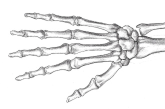

Cómo dibujar manos parte 1-Construcción
Las manos son muy expresivas y transmiten múltiples emociones, pero resultan difíciles de dibujar. Muchos artistas tienden a ocultarlas, aunque la mejor forma de mejorar es perder el miedo y practicarlas constantemente.
Para aprender a dibujar manos es clave entender primero sus proporciones y estructura ósea. Este tutorial explica cómo construir la base de la mano, y más adelante se abordarán detalles como uñas, piel y arrugas.
Cómo dibujar una mano paso a paso
Paso 1:Dale forma a la palma
Usa un lápiz HB para dibujar un rectángulo ligeramente más largo que un cuadrado. Haz una pendiente en la parte superior. El lado derecho de la curva se inclinará mucho más que el izquierdo, ya que estamos dibujando el dorso de la mano derecha. Redondea también el lado derecho del rectángulo.
Paso 2:Dibuja cinco círculos
Dibuja cuatro círculos en la parte superior, con la misma separación entre ellos. Estos son los nudillos. Agrega un quinto círculo para el pulgar, ubicado en la parte inferior izquierda, aproximadamente a 4/5 de la línea.
Paso 3:Mide y dibuja los dedos
La longitud de los dedos se calcula midiendo desde la muñeca hasta los nudillos y duplicando esa medida. El dedo medio sirve como referencia, y una línea curva ayuda a definir la altura de los demás dedos.
Paso 4:Encuentra las articulaciones de cada dedo
Tras dibujar los cuatro dedos, se marcan dos puntos en el dedo medio —a un cuarto de su altura— para guiar la ubicación de las articulaciones. Estas medidas son aproximadas y sirven como referencia simplificada.
Paso 5:Dibuja círculos en cada articulación
Para cada dedo,dibuja dos círculos más.Cada dedo debe tener tres círculos,de pequeño a mediano,y de arriba a abajo.
Paso 6:Dibuja el pulgar
Para el pulgar, dibuja una línea curva que salga del círculo inferior izquierdo. La altura del pulgar variará según su extensión. Mide la longitud del pulgar y dibuja un círculo en la mitad. Agrega otro círculo a la mitad de su longitud.
Paso 7:Haz contornos alrededor de la mano

Al contornear la mano, puedes variar la grasa entre articulaciones para que se vea más delgada o regordeta. No olvides añadir las membranas interdigitales, que deben colocarse por encima de los nudillos. Con estas bases ya se pueden practicar distintos gestos.